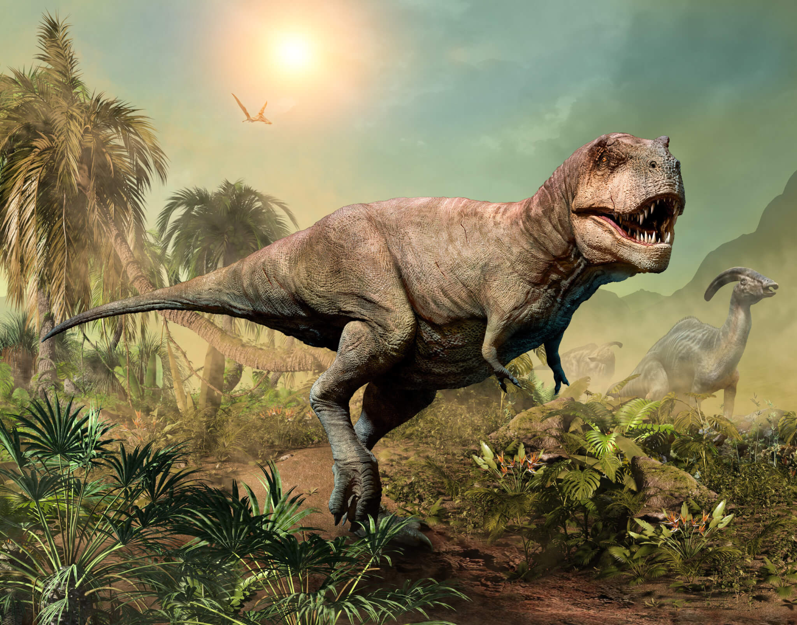
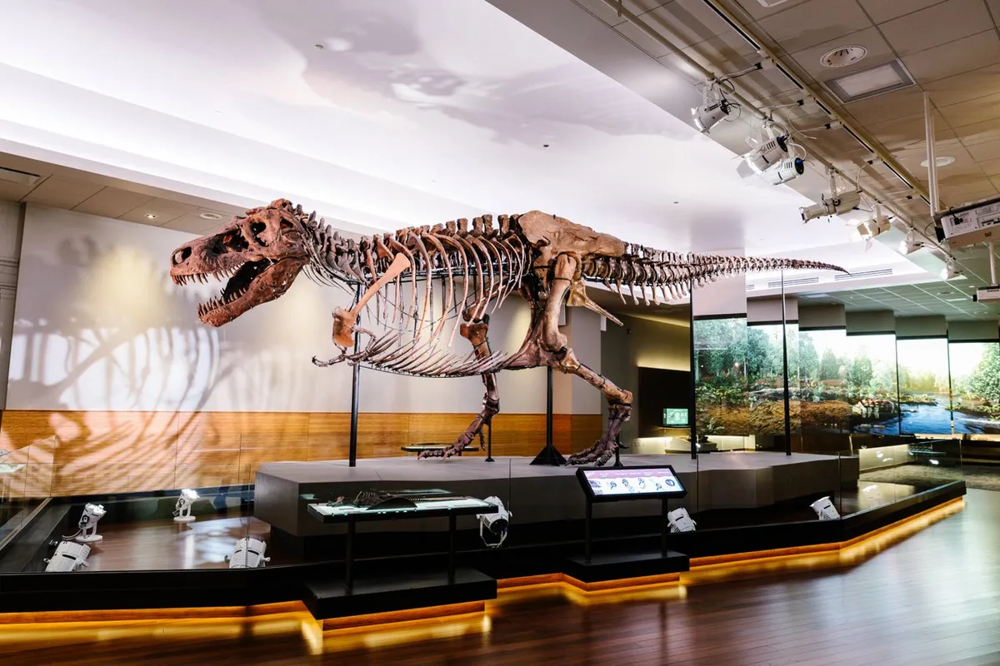
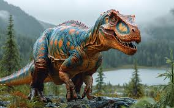
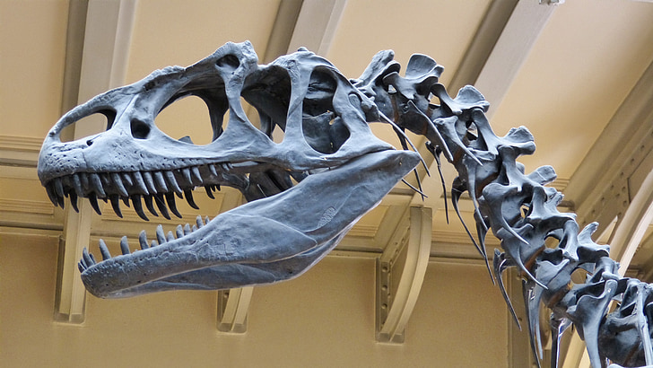
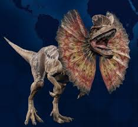
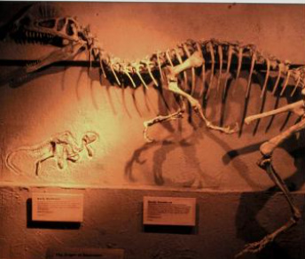

TYRANNOSAURUS REX
Tyrannosaurus is a genus of large theropod dinosaur. The type species Tyrannosaurus rex, often shortened to T. rex or colloquially T-Rex, is one of the best represented theropods. It lived throughout what is now western North America, on what was then an island continent known as Laramidia. Specimens of Tyrannosaurus rex include some that are nearly complete skeletons. Soft tissue and proteins have been reported in at least one of these specimens. The abundance of fossil material has allowed significant research into many aspects of its biology, including its life history and biomechanics. The feeding habits, physiology, and potential speed of Tyrannosaurus rex are a few subjects of debate.
Sign of Tyrannosorous Rex Territory...
Large swaths of uprooted & dislodged trees nearby. Nauseating odours from decaying prey.‘Graveyards’ of decomposed meals, littered with bones, or large plumes of flies. A second footprint that may have been made by a Tyrannosaurus was first reported in 2007 by British paleontologist Phil Manning, from the Hell Creek Formation of Montana. This second track measures 72 centimeters (28 in) long, shorter than the track described by Lockley and Hunt. Whether or not the track was made by Tyrannosaurus is unclear, though Tyrannosaurus is the only large theropod known to have existed in the Hell Creek Formation.


ALLOSAURUS
Allosaurus is an extinct genus of large carnosaurian theropod dinosaur that lived 155 to 145 million years ago during the Late Jurassic period. The name "Allosaurus" means "different lizard", alluding to its unique concave vertebrae.Allosaurus was a large bipedal predator for its time. Its skull was light, robust, and equipped with dozens of sharp, serrated teeth. It averaged 8.5 metres (28 ft) in length for A. fragilis, with the largest specimens estimated as being 9.7 metres (32 ft) long. Relative to the large and powerful legs, its three-fingered hands were small and the body was balanced by a long, muscular tail. It is classified as an allosaurid, a type of carnosaurian theropod dinosaur.
Sign of Allosaurus Territory ...
During mating season (early spring to mid-summer) conditions bring large groups together for nesting. The genus has a very complicated taxonomy and includes at least three valid species, the best known of which is A. fragilis. The bulk of Allosaurus remains have come from North America's Morrison Formation, with material also known from the Lourinhã Formation in Portugal. It was known for over half of the 20th century as Antrodemus, but a study of the abundant remains from the Cleveland-Lloyd Dinosaur Quarry returned the name "Allosaurus."


DILOPHOSAURUS
Dilophosaurus is a genus of theropod dinosaurs that lived in what is now North America during the Early Jurassic, about 186 million years ago. Three skeletons were discovered in northern Arizona in 1940, and the two best preserved were collected in 1942. Dilophosaurus has been considered a member of the family Dilophosauridae along with Dracovenator, a group placed between the Coelophysidae and later theropods, but some researchers have not found support for this grouping. Dilophosaurus would have been active and bipedal, and may have hunted large animals; it could also have fed on smaller animals and fish. Due to the limited range of movement and shortness of the forelimbs, the mouth may instead have made first contact with prey.
Sign of Dilophosaurus Territory...
Dark, dry ‘paint-like’ splatters on nearby trees. A sour, sharp smell in the air from territorial marking with pheromones.Dried venom on trees, long grass, and carrion. Lots of small carcasses within a small radius.Welles found that Dilophosaurus did not have a powerful bite, due to weakness caused by the subnarial gap. He thought that it used its front premaxillary teeth for plucking and tearing rather than biting, and the maxillary teeth further back for piercing and slicing. He thought that it was probably a scavenger rather than a predator, and that if it did kill large animals, it would have done so with its hands and feet rather than its jaws. Welles did not find evidence of cranial kinesis in the skull of Dilophosaurus, a feature that allows individual bones of the skull to move in relation to each other.
